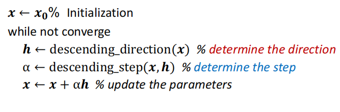
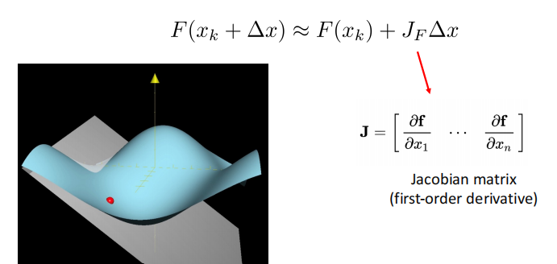
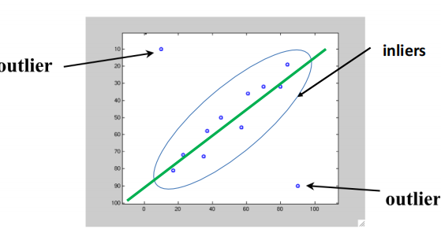
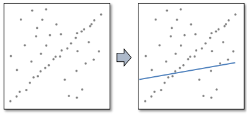
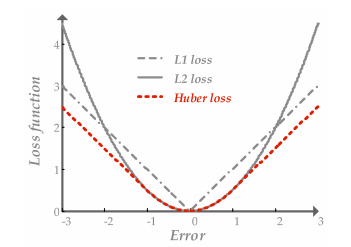
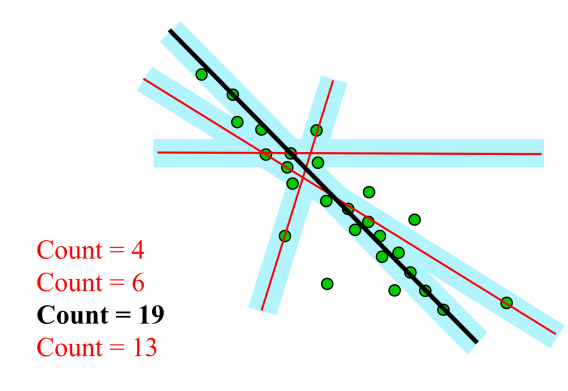
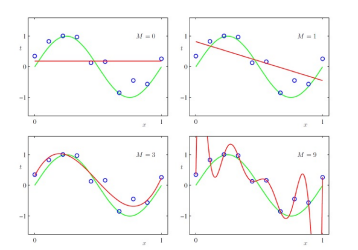
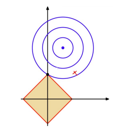

Lec4: Model fitting and Optimization¶
约 1431 个字 预计阅读时间 5 分钟
Optimization¶
这里首先介绍了优化的基本范式，详见优化基本理论与方法，这里不详细展开
一个有趣的example：Image deblurring
我们已知模糊图像Y和卷积核F，需要通过优化的方法得到去噪后的图像X
我们的想法是找到清晰的图像X，使得它做模糊处理后与已知的图像Y差别尽可能小，于是得到目标函数： $$ \mathop{min}_X \Vert Y-FX\Vert_2^2 $$
Model fitting¶
一个模型描述问题中输入和输出的关系：例如线性模型\(b=a^Tx\) 描述输入\(a\) 和输出 \(b\) 关于模型参数 \(x\) 的关系。
但实际结果很难完全满足数学模型，因此我们做的是进行模型拟合，即我们有一个先验的假设（数据符合哪种模型），然后从从数据集中预测出模型的参数（该方法通常被称为学习）
一个经典的方法：最小二乘法(Minimize the Mean Square Error(MSE)) $$ \hat{x}=\mathop{argmin}_x\sum_i(b_i-a_i^Tx)^2 $$
如果我们假设数据中的噪声是服从高斯分布，那么可以与极大似然估计联系起来
Maximum Likelihood Estimation¶
首先假设数据服从高斯分布 $$ b_i=a_i^T+n, n\sim G(0,\sigma) $$ 对于给定的 \(x\), 观察到 \((a_i,b_i)\) 的似然（可能性）： $$ P[(a_i,b_i)|x]=P[b_i-a_i^Tx]\propto exp-\frac{(b_i-a_i^Tx)^2}{2\sigma^2} $$ 如果数据点是相互独立的，那么： $$ P[(a_1,b_1)(a_2,b_2)\cdots|x]=\Pi_iP[b_i-a_i^Tx]\propto exp\frac{(b_i-a_i^Tx)^2}{2\sigma^2}=exp-\frac{\Vert Ax-b\Vert_2}{2\sigma^2} $$
因此我们可以看到，极大似然估计即为找到\(x\)能够最大化似然函数，而这即为最小化\(\Vert Ax-b\Vert_2\)
因此MSE=MLE with Gaussian noise assumption
Numerical methods¶

Recap: Taylor expansion¶
- First-order approximation

- Second-order approximation

梯度下降法¶
Steepest descent method¶
- Advantage
- Easy to implement
- Perform well when far from the minimum
- Disadvantage
- Converge slowly when near the minimum
- Waste a lot of computation
Newton method(考虑了二阶导)¶
- Do second-order expansion
- Find \(\Delta x\) to minmize \(F(x_k+\Delta x)\)
- Advantage: fast convergence near the minimum
- Disadvantage: Hessian requires a lot of computation
Gauss-Newton method¶
Useful for solving nonlinear least squares \(\hat{x}=arg \mathop{min}_x\Vert R(x)\Vert_2^2\)
- Instead of expanding \(F(x)\), we expand \(R(x)\)
- Optimal direction
即使用\((J_R^TJ_R)\) 来近似代替\(H_F\). 大大减少计算量
- Disadvantage: \((J_R^TJ_R)\)不正定，所以未必可逆
Levenberg-Marquardt¶
The effect of \(\lambda\)
- \(\lambda \rightarrow \infty\)： Gradient descent, and stepsize is small
- \(\lambda \rightarrow 0\): Gauss-Newton step
Advantage
- Start quickly(远离目标点时使用最速梯度下降)
- Converge quickly(接近目标点时近似高斯牛顿法，保证收敛速度快)
- \(J_R^TJ_R+\lambda I\)正定，保证高斯牛顿法成立
Robust estimation¶
Outliers¶
- Inlier(内点)： obeys the model assumption
- Outlier(外点): differs significantly from the assumption（离群值）

外点会使得最小二乘法受很大影响，它会过度放大偏离较大的误差

Robust estimation¶
Use other loss function to replace MSE
- \(L_1\)损失函数：是残差绝对值的和，可以有效减少离群值对模型拟合的影响，但缺点在于零点不可导
- Huber loss: 使用分段函数，在拐点附近使用\(L_2\),远处使用\(L_1\).

- They are called robust functions.
RANSAC: Random Sample Concensus¶
- The most powerful method to handle outliers
RANSAC的主要思想：
首先我们知道拟合一条直线只需要两个点，因此首先随机找两个点拟合一条直线，然后检查有多少点符合该直线(只要点到直线的距离小于一定的阈值，就count++)，一直重复该过程，选择count最高的直线。

该方法能够work的原因就是outlier之间差别很大，相互之间很难达到一致；而inlier之间很容易一致，使得count更高。
Overfitting and underfitting¶

上图中右下角那幅图便是过拟合的一个例子，虽然每模型很好地fit了所有的点，但这并不是我们想要的。
ill-posed problem
解不唯一的问题被称为一个ill-posed problem。(例如线性代数中线性方程组的解不唯一)
为了解决这种问题，我们需要增加约束，引入正则化条件。
\(L_2\) regularization¶
其中\(\Vert x\Vert_2\le 1\)就是正则化约束。
通过让选择的解尽可能接近原点，而让我们没有用的解的维度尽可能接近 0，以减小没用的变量的影响。
一个简单直观的例子：假设我想通过\(b=A^Tx\), 即输入\(A\)，通过模型参数 \(x\) 预测 \(b\).假设\(x=(x_1,\cdots,x_{2n})\)，而我们先验认为有用的只有前\(n\)项，这时通过限制\(\Vert x\Vert_2=x_1^2+\cdots+x_{2n}^2\le 1\),当前\(n\)项值比较大时，后\(n\)项的值就会趋向于零，抑制这些冗余变量。
\(L_1\) regularization¶
我们可以类似地理解\(L_1\)正则化。
但需要注意的是，如下图可视化所示，\(L_1\)函数有很多突出的角，高维情况下更多。目标函数与这些角接触的机会远大于与其它部分，而在这些角由于位于坐标轴上，有很多维度的值等于零，因此使得解变得更稀疏。

创建日期: 2023年10月23日 09:55:35